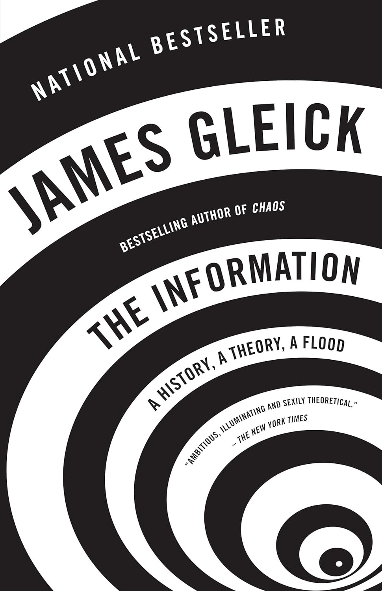
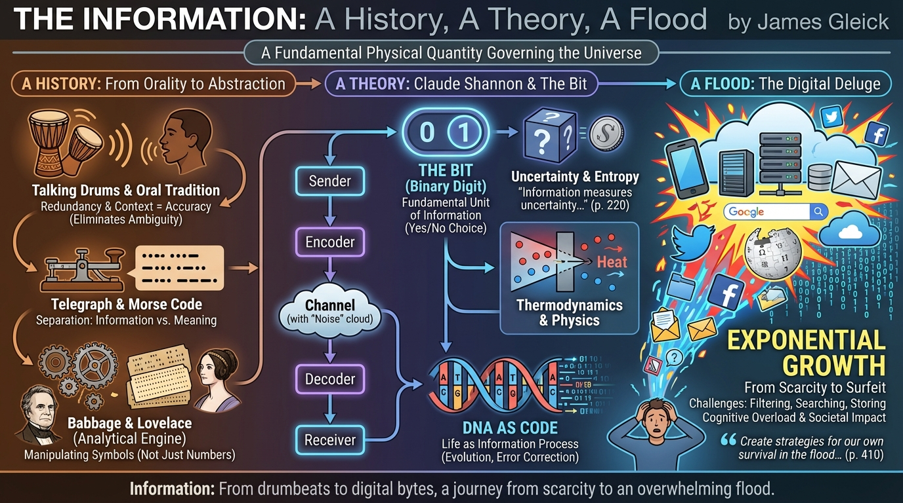

isbn-13: 9780007225736
Paperback
AI Generated Content
Generated by gemini-3-pro-preview

The Information: A History, A Theory, A Flood chronicles the evolution of information from the era of oral tradition and drum signals to the modern age of digital deluge. James Gleick argues that information is not merely a human construct but a fundamental physical quantity, akin to matter and energy, that governs the universe. The narrative is anchored by the development of Information Theory, primarily through the work of Claude Shannon.
Key Points
The Nature of Communication and Redundancy
The book opens with an analysis of the “talking drums” used in Africa. Gleick explains that these drums did not function like a telegraph (letter-by-letter) but rather transmitted stereotypical phrases. Because the drums had limited tonal variation, the drummers relied heavily on redundancy and context to eliminate ambiguity and ensure the message was understood despite noise or distance. This establishes a central theme: redundancy is essential for accuracy in communication systems.
“Stereotyped phrases, redundant and formulaic, were the only vehicle for the transmission of culture.” (p. 25, Pantheon First Edition)
The Separation of Information from Meaning
A crucial turning point in the history of information was the realization that “information” could be quantified and processed independently of its semantic meaning. This began with the development of the telegraph and Morse code, which treated letters as abstract symbols to be encoded, transmitted, and decoded.
Babbage, Lovelace, and the Analytical Engine
Gleick details the contributions of Charles Babbage and Ada Lovelace. While Babbage designed the hardware (the Difference Engine and the Analytical Engine), Lovelace conceptualized the potential of the machine to manipulate symbols, not just numbers. She foresaw that a computer could process any form of information—music, letters, or logic—if it could be converted into data.
Claude Shannon and the Bit
The core of the book revolves around Claude Shannon, a Bell Labs mathematician who published “A Mathematical Theory of Communication” in 1948. Shannon defined the fundamental unit of information as the “bit” (binary digit). He demonstrated that all information could be reduced to yes/no choices. Shannon’s theory treated information as a measure of uncertainty or “entropy”—the more uncertain the outcome, the more information is contained in the message resolving it.
“The bit is a universal measure for the amount of information… It measures the amount of uncertainty in a message.” (p. 220)
Entropy and Maxwell’s Demon
Gleick explores the intersection of thermodynamics and information theory. He discusses the thought experiment known as “Maxwell’s Demon,” utilized to distinguish between heat and information. The book explains how physicists eventually reconciled the two fields, concluding that the erasure of information dissipates energy, linking the abstract concept of the bit to physical laws.
DNA as Code
The narrative shifts to biology, framing the discovery of the structure of DNA as an information revolution. Gleick posits that life itself is an information process. The genetic code is treated as a transmission of data across generations, subject to noise (mutations) and requiring error correction, fitting perfectly into Shannon’s framework.
“The gene has become the archetypal information carrier… The biosphere is a web of information.” (p. 297)
The Flood
The final section addresses the exponential growth of generated data. Gleick describes the transition from information scarcity (where the primary struggle was preservation and transmission) to information surfeit. He discusses the challenges of filtering, searching (Google), and storing data (Wikipedia and the “Library of Babel”). The “flood” refers to the psychological and societal impact of having access to more information than can be cognitively processed.
“We have to create the strategies for our own survival in the flood… coping with the abundance of information.” (p. 410)
Further Reading
- A Mind at Play: How Claude Shannon Invented the Information Age by Jimmy Soni and Rob Goodman
- The Innovators: How a Group of Hackers, Geniuses, and Geeks Created the Digital Revolution by Walter Isaacson
- Code: The Hidden Language of Computer Hardware and Software by Charles Petzold
- Cybernetics: Or Control and Communication in the Animal and the Machine by Norbert Wiener
Quotes
Prologue
“The fundamental problem of communication is that of reproducing at one point either exactly or approximately a message selected at another point. Frequently the messages have meaning.” -Claude Shannon (1948)
For the purposes of science, information had to mean something special. Three centuries earlier, the new discipline of physics could not proceed until Isaac Newton appropriated words that were ancient and vague - force, mass, motion , and even time and gave them new meanings. Newton made these terms into quantities, suitable for use in mathematical formulas. Until then, motion (for example) had been just as soft and inclusive a term as information. (p7)
Drums That Talk
The result was a technology much sought in Europe: long-distance communication faster than any traveler on foot or horseback. Through the still night air over a river, the thump of the drum could carry six or seven miles. Relayed from village to village, messages could rumble a hundred miles or more in a matter of an hour. (p15)
In solving the enigma of the drums, Carrington found the key in a central fact about the relevant African languages. They are tonal languages, in which meaning is determined as much by rising or falling pitch contours as by distinctions between consonants or vowels. This feature is missing from most Indo-European languages, including English, which uses tone only in limited, syntactical ways. (p23)
As the spoken languages of Africa elevated tonality to a crucial role, the drum language went a difficult step further. It employed tone and only tone. It was a language of a single pair of phonemes, a language composed entirely of pitch contours. The drums varied in materials and craft. Some were slit gongs, tubes of padauk wood, hollow, cut with a long and narrow mouth to make a high-sounding lip and a low-sounding lip; others had skin tops, and these were used in pairs. All that mattered was for the drums to sound two distinct notes, at an interval of about a major third.
So in mapping the spoken language to the drum language, information was lost. The drum talk was speech with a deficit. For every village and every tribe, the drum language began with the spoken word and shed the consonants and vowels. That was a lot to lose. The remaining information stream would be riddled with ambiguity. A double stroke on the high-tone lip of the drum matched the tonal pattern of the Kele word for father, sango, but naturally it could just as well be songe, the moon; koko, fowl; fele, a species of fish; or any other word of two high tones. Even the limited dictionary of the missionaries at Yakusu contained 130 such words. Having reduced spoken words, in all their sonic richness, to such a minimal code, how could the drums distinguish them? The answer lay partly in stress and timing, but these could not compensate for the lack of consonants and vowels. Thus, Carrington discovered, a drummer would invariably add “a little phrase” to each short word. Songe, the moon, is rendered as songe li tange la manga - “the moon looks down at the earth.” Koko, the fowl, is rendered koko olongo la bokiokio - “the fowl, the little one that says kiokio.” The extra drumbeats, far from being extraneous, provide context. Every ambiguous word begins in a cloud of possible alternative interpretations; then the unwanted possibilities evaporate. This takes place below the level of consciousness. Listeners are hearing only staccato drum tones, low and high, but in effect they “hear” the missing consonants and vowels, too. For that matter, they hear whole phrases, not individual words. “Among peoples who know nothing of writing or grammar, a word per se, cut out of its sound group, seems almost to cease to be an intelligible articulation,” Captain Rattray reported. (p24)
A paper by a Bell Labs telephone engineer, Ralph Hartley, even had a relevant-looking formula: H = n log s, where H is the amount of information, n is the number of symbols in the message, and s is the number of symbols available in the language.
Hartley’s younger colleague Claude Shannon later pursued this lead, and one of his touchstone projects became a precise measurement of the redundancy in English. Symbols could be words, phonemes, or dots and dashes. The degree of choice within a symbol set varied-a thousand words or forty-five phonemes or twenty-six letters or three types of interruption in an electrical circuit. The formula quantified a simple enough phenomenon (simple, anyway, once it was noticed): the fewer symbols available, the more of them must be transmitted to get across a given amount of information. For the African drummers, messages need to be about eight times as long as their spoken equivalents. (p26)
The Persistence of the Word
Luria found striking differences between illiterate and even slightly literate subjects, not in what they knew, but in how they thought. Logic implicates symbolism directly: things are members of classes; they possess qualities, which are abstracted and generalized. Oral people lacked the categories that become second nature even to illiterate individuals in literate cultures: for example, for geometrical shapes. Shown drawings of circles and squares, they named them as “plate, sieve, bucket, watch, or moon” and “mirror, door, house, apricot drying board.” They could not, or would not, accept logical syllogisms. (p38)
Two Wordbooks
The whole word hoard - the lexis - constitutes a symbol set of the language. It is the fundamental symbol set, in one way: words are the first units of meaning any language recognizes. They are recognized universally. But in another way it is far from fundamental: as communication evolves, messages in a language can be broken down and composed and transmitted in much smaller sets of symbols: the alphabet; dots and dashes; drumbeats high and low. These symbol sets are discrete. The lexis is not. It is messier. It keeps on growing. Lexicography turns out to be a science poorly suited to exact measurement. English, the largest and most widely shared language, can be said very roughly to possess a number of units of meaning that approaches a million. Linguists have no special yardsticks of their own; when they try to quantify the pace of neologism, they tend to look to the dictionary for guidance, and even the best dictionary runs from that responsibility. The edges always blur. A clear line cannot be drawn between word and unword. (74)
To Throw The Powers Of Thought Into Wheel-Work
Babbage invented his own machine, a great, gleaming engine of brass and pewter, comprising thousands of cranks and rotors, cogs and gearwheels, all tooled with the utmost precision. He spent his long life improving it, first in one and then in another incarnation, but all, mainly, in his mind. It never came to fruition anywhere else. It thus occupies an extreme and peculiar place in the annals of invention: a failure, and also one of humanity’s grandest intellectual achievements. It failed on a colossal scale, as a scientificindustrial project “at the expense of the nation, to be held as national property,” financed by the Treasury for almost twenty years, beginning in 1823 with a Parliamentary appropriation of £1,500 and ending in 1842, when the prime minister shut it down. Later, Babbage’s engine was forgotten. It vanished from the lineage of invention. Later still, however, it was rediscovered, and it became influential in retrospect, to shine as a beacon from the past. (p80)
A Nervous System For The Earth
Before there were electric telegraphs, there were just telegraphs: les télégraphes, invented and named by Claude Chappe in France during the Revolution.* They were optical; a “telegraph” was a tower for sending signals to other towers in line of sight. The task was to devise a signaling system more efficient and flexible than, say, bonfires. (p129)
In more ways than one, using the telegraph meant writing in code.
The Morse system of dots and dashes was not called a code at first. It was just called an alphabet: “the Morse Telegraphic Alphabet,” typically. But it was not an alphabet. It did not represent sounds by signs. The Morse scheme took the alphabet as a starting point and leveraged it, by substitution, replacing signs with new signs. It was a meta-alphabet, an alphabet once removed. This process-the transferring of meaning from one symbolic level to another-already had a place in mathematics. In a way it was the very essence of mathematics. Now it became a familiar part of the human toolkit. Entirely because of the telegraph, by the late nineteenth century people grew comfortable, or at least familiar, with the idea of codes: signs used for other signs, words used for other words. Movement from one symbolic level to another could be called encoding. (p152)
New Wires, New Logic
In 1908 John J. Carty, who became the first head of the Bell Laboratories, offered an information-based analysis to show how the telephone had shaped the New York skyline-arguing that the telephone, as much as the elevator, had made skyscrapers possible.
‘It may sound ridiculous to say that Bell and his successors were the fathers of modern commercial architecture-of the skyscraper. But wait a minute. Take the Singer Building, the Flatiron Building, the Broad Exchange, the Trinity, or any of the giant office buildings. How many messages do you suppose go in and out of those buildings every day? Suppose there was no telephone and every message had to be carried by a personal messenger? How much room do you think the necessary elevators would leave for offices? Such structures would be an economic impossibility’. (p192)
Information Theory
A century had passed between Babbage’s Analytical Engine and Turing’s Universal Machine - a grand and unwieldy contraption and an elegant unreal abstraction. Turing never even tried to be a machinist. “One can picture an industrious and diligent clerk, well supplied with scratch paper, tirelessly following his instructions,” as the mathematician and logician Herbert Enderton remarked years later. Like Ada Lovelace, Turing was a programmer, looking inward to the step-by-step logic of his own mind. He imagined himself as a computer. He distilled mental procedures into their smallest constituent parts, the atoms of information processing. (p212)
Information is uncertainty, surprise, difficulty, and entropy:
• “Information is closely associated with uncertainty.” Uncertainty, in turn, can be measured by counting the number of possible messages. If only one message is possible, there is no uncertainty and thus no information.
• Some messages may be likelier than others, and information implies surprise. Surprise is a way of talking about probabilities. If the letter following t (in English) is h, not so much information is conveyed, because the probability of h was relatively high.
• “What is significant is the difficulty in transmitting the message from one point to another.” Perhaps this seemed backward, or tautological, like defining mass in terms of the force needed to move an object. But then, mass can be defined that way.
• Information is entropy. This was the strangest and most powerful notion of all. Entropy - already a difficult and poorly understood concept - is a measure of disorder in thermodynamics, the science of heat and energy. (p219)
Shannon sidestepped this problem by treating the signal as a string of discrete symbols. Now, instead of boosting the power, a sender can overcome noise by using extra symbols for error correction-just as an African drummer makes himself understood across long distances, not by banging the drums harder, but by expanding the verbosity of his discourse. Shannon considered the discrete case to be more fundamental in a mathematical sense as well. And he was considering another point: that treating messages as discrete had application not just for traditional communication but for a new and rather esoteric subfield, the theory of computing machines. (p 224)
To illuminate the structure of the message Shannon turned to some methodology and language from the physics of stochastic processes, from Brownian motion to stellar dynamics. (He cited a landmark 1943 paper by the astrophysicist Subrahmanyan Chandrasekhar in Reviews of Modern Physics.) A stochastic process is neither deterministic (the next event can be calculated with certainty) nor random (the next event is totally free). It is governed by a set of probabilities. Each event has a probability that depends on the state of the also system perhaps on its previous history. If for event we substitute symbol, then a natural written language like English or Chinese is a stochastic process. So is digitized speech; so is a television signal. (p225)
Looking more deeply, Shannon examined statistical structure in terms of how much of a message influences the probability of the next symbol. The answer could be none: each symbol has its own probability but does not depend on what came before. This is the first-order case. In the second-order case, the probability of each symbol depends on the symbol immediately before, but not on any others. Then each two character combination, or digram, has its own probability: th greater xp, in English. In the third-order case, one looks at trigrams, and so forth. Beyond that, in ordinary text, it makes sense to look at the level of words rather than individual characters, and many types of statistical facts come into play. Immediately after the word yellow, some words have a higher probability than usual and others virtually zero. After the word an, words beginning with consonants become exceedingly rare. If the letter u ends a word, the word is probably you. If two consecutive letters are the same, they are probably ll, ee, ss, or oo. And structure can extend over long distances: in a message containing the word cow, even after many other characters intervene, the word cow is relatively likely to occur again. As is the word horse. A message, as Shannon saw, can behave like a dynamical system whose future course is conditioned by its past history. (p 226)
The point was to represent a message as the outcome of a process that generated events with discrete probabilities. Then what could be said about the amount of information, or the rate at which information is generated? For each event, the possible choices each have a known probability (represented as p1, p2, p3, and so on). Shannon wanted to define the measure of information (represented as H) as the measure of uncertainty: “of how much ‘choice’ is involved in the selection of the event or of how uncertain we are of the outcome.” The probabilities might be the same or different, but generally more choices meant more uncertainty-more information. Choices might be broken down into successive choices, with their own probabilities, and the probabilities had to be additive; for example, the probability of a particular digram should be a weighted sum of the probabilities of the individual symbols. When those probabilities were equal, the amount of information conveyed by each symbol was simply the logarithm of the number of possible symbols-Nyquist and Hartley’s formula:
H = n log s
For the more realistic case, Shannon reached an elegant solution to the problem of how to measure information as a function of probabilitiesan equation that summed the probabilities with a logarithmic weighting (base 2 was most convenient). It is the average logarithm of the improbability of the message; in effect, a measure of unexpectedness:
H = -Σ Pi, log₂ Pi
where Pi, is the probability of each message. He declared that we would be seeing this again and again: that quantities of this form “play a central role in information theory as measures of information, choice, and uncertainty.” Indeed, H is ubiquitous, conventionally called the entropy of a message, or the Shannon entropy, or, simply, the information (p 228)
And he delivered a stunning package of fundamental results. One was a formula for channel capacity, the absolute speed limit of any communication channel (now known simply as the Shannon limit). Another was the discovery that, within that limit, it must always be possible to devise schemes of error correction that will overcome any level of noise. The sender may have to devote more and more bits to correcting errors, making transmission slower and slower, but the message will ultimately get through. Shannon did not show how to design such schemes; he only proved that it was possible, thereby inspiring a future branch of computer science. (p 230)
Entropy and its Demons
Thomson liked the word dissipation for this. Energy is not lost, but it dissipates. Dissipated energy is present but useless. It was Maxwell, though, who began to focus on the confusion itself - the disorder - as entropy’s essential quality. Disorder seemed strangely unphysical. It implied that a piece of the equation must be something like knowledge, or intelligence, or judgment. “The idea of dissipation of energy depends on the extent of our knowledge,” Maxwell said. “Available energy is energy which we can direct into any desired channel. Dissipated energy which we cannot lay hold of and direct at pleasure, such as the energy of the confused agitation of molecules which we call heat.” What we can do, or know, became part of the definition. It seemed impossible to talk about order and disorder without involving an agent or an observer-without talking about the mind:
“Confusion, like the correlative term order, is not a property of material things in themselves, but only in relation to the mind which perceives them. A memorandum-book does not, provided it is neatly written, appear confused to an illiterate person, or to the owner who understands it thoroughly, but to any other person able to read it appears to be inextricably confused. Similarly the notion of dissipated energy could not occur to a being who could not turn any of the energies of nature to his own account, or to one who could trace the motion of every molecule and seize it at the right moment.
Order is subjective-in the eye of the beholder. Order and confusion are not the sorts of things a mathematician would try to define or measure. Or are they? If disorder corresponded to entropy, maybe it was ready for scientific treatment after all. (p 272)
To the physicist, entropy is a measure of uncertainty about the state of a physical system: one state among all the possible states it can be in. These microstates may not be equally likely, so the physicist writes S = -Σ p log p
To the information theorist, entropy is a measure of uncertainty about a message: one message among all the possible messages that a communications source can produce. The possible messages may not be equally likely, so Shannon wrote H = -Σ p log p (p 280)
We all behave like Maxwell’s demon. Organisms organize. In everyday experience lies the reason sober physicists across two centuries kept this cartoon fantasy alive. We sort the mail, build sand castles, solve jigsaw puzzles, separate wheat from chaff, rearrange chess pieces, collect stamps, alphabetize books, create symmetry, compose sonnets and sonatas, and put our rooms in order, and to do all this requires no great energy, as long as we can apply intelligence. We propagate structure (not just we humans but we who are alive). We disturb the tendency toward equilibrium. It would be absurd to attempt a thermodynamic accounting for such processes, but it is not absurd to say we are reducing entropy, piece by piece. Bit by bit. The original demon, discerning one molecule at a time, distinguishing fast from slow, and operating his little gateway, is sometimes described as “superintelligent,” but compared to a real organism it is an idiot savant. Not only do living things lessen the disorder in their environments; they are in themselves, their skeletons and their flesh, vesicles and membranes, shells and carapaces, leaves and blossoms, circulatory systems and metabolic pathways–miracles of pattern and structure. It sometimes seems as if curbing entropy is our quixotic purpose in this universe. (p 282)
Schrödinger began with what he called the enigma of biological stability. In notable contrast to a box of gas, with its vagaries of probability and fluctuation, and in seeming disregard of Schrödinger’s own wave mechanics, where uncertainty is the rule, the structures of a living creature exhibit remarkable permanence. They persist, both in the life of the organism and across generations, through heredity. This struck Schrödinger as requiring explanation.
“When is a piece of matter said to be alive?” he asked. He skipped past the usual suggestions-growth, feeding, reproduction-and vered as simply as possible: “When it goes on ‘doing something,’ moving, exchanging material with its environment, and so forth, for a much longer period than we would expect an inanimate piece of matter to ‘keep going’ under similar circumstances.” Ordinarily, a piece of matter comes to a standstill; a box of gas reaches a uniform temperature; a chemical system “fades away into a dead, inert lump of matter-one way or another, the second law is obeyed and maximum entropy is reached. Living things manage to remain unstable. (p282)
Life’s Own Code
The macromolecules of organic life embody information in an intricate structure. A single hemoglobin molecule comprises four chains of polypeptides, two with 141 amino acids and two with 146, in strict linear sequence, bonded and folded together. Atoms of hydrogen, oxygen, carbon, and iron could mingle randomly for the lifetime of the universe and be no more likely to form hemoglobin than the proverbial chimpanzees to type the works of Shakespeare. Their genesis requires energy; they are built up from simpler, less patterned parts, and the law of entropy applies. For earthly life, the energy comes as photons from the sun. The information comes via evolution. (p 292)
Even before the exact answer was reached, Crick crystallized its fundamental principles in a statement that he called (and is called to this day) the Central Dogma. It is a hypothesis about the direction of evolution and the origin of life; it is provable in terms of Shannon entropy in the possible chemical alphabets:
‘Once “information” has passed into protein it cannot get out again. In more detail, the transfer of information from nucleic acid to nucleic acid, or from nucleic acid to protein may be possible, but transfer from protein to protein, or from protein to nucleic acid is impossible. Information means here the precise determination of sequence.’
The genetic message is independent and impenetrable: no information from events outside can change it.
Information had never been writ so small. Here is scripture at angstrom scale, published where no one else can see, the Book of Life in the eye of a needle. (p 297)
Into the Meme Pool
Most of the biosphere cannot see the infosphere; it is invisible, a parallel universe humming with ghostly inhabitants. But they are not ghosts to us - not anymore. We humans, alone among the earth’s organic creatures, live in both worlds at once. It is as though, having long coexisted with the unseen, we have begun to develop the needed extrasensory perception. We are aware of the many species of information. We name their types sardonically, as though to reassure ourselves that we understand: urban myths and zombie lies. We keep them alive in air-conditioned server farms. But we cannot own them. When a jingle lingers in our ears, or a fad turns fashion upside down, or a hoax dominates the global chatter for months and vanishes as swiftly as it came, who is master and who is slave? (p 323)
The Sense of Randomness
It is a simple word, random, and everyone knows what it means. Everyone, that is, and no one. Philosophers and mathematicians struggled endlessly. Wheeler said this much, at least: “Probability, like time, is a concept invented by humans, and humans have to bear the responsibility for the obscurities that attend it.” The toss of a fair coin is random, though every detail of the coin’s trajectory may be determined à la Newton. Whether the population of France is an even or odd number at any given instant is random, but the population of France itself is surely not random: it is a definite fact, even if not knowable. John Maynard Keynes tackled randomness in terms of its opposites, and he chose three: knowledge, causality, and design. What is known in advance, determined by a cause, or organized according to plan cannot be random. (p 326)
Kolmogorov put this idea on a solid mathematical footing by calculating complexity in terms of algorithms. The complexity of an object is the size of the smallest computer program needed to generate it. An object that can be produced by a short algorithm has little complexity. On the other hand, an object needing an algorithm every bit as long as the object itself has maximal complexity.
A simple object can be generated - or computed, or described -with just a few bits. A complex object requires an algorithm of many bits. Put this it seemed obvious. But until now it had not been understood way, mathematically. (p 337)
In quantum physics and later in chaos, scientists found the limits to their knowledge. They explored the fruitful uncertainty that at first so vexed Einstein, who did not want to believe that God plays dice with the universe. Algorithmic information theory applies the same limitations to the universe of whole numbers-an ideal, mental universe. As Chaitin put it, “God not only plays dice in quantum mechanics and nonlinear dynamics, but even in elementary number theory.”
Among its lessons were these:
• Most numbers are random. Yet very few of them can be proved random.
• A chaotic stream of information may yet hide a simple algorithm. Working backward from the chaos to the algorithm may be impossible.
• Kolmogorov-Chaitin (KC) complexity is to mathematics what entropy is to thermodynamics: the antidote to perfection. Just as we can have no perpetual-motion machines, there can be no complete formal axiomatic systems.
• Some mathematical facts are true for no reason. They are accidental, lacking a cause or deeper meaning (p 343)
Over a period of years, Bennett developed a new measure of value, which he called “logical depth.” Bennett’s idea of depth is connected to complexity but orthogonal to it. It is meant to capture the usefulness of a message, whatever usefulness might mean in any particular domain.
“From the earliest days of information theory it has been appreciated that information per se is not a good measure of message value,” he wrote, finally publishing his scheme in 1988.
…
The amount of work it takes to compute something had been mostly disregarded-set aside-in all the theorizing based on Turing machines, which work, after all, so ploddingly. Bennett brought it back. There is no logical depth in the parts of a message that are sheer randomness and unpredictability, nor is there logical depth in obvious redundancyplain repetition and copying. Rather, he proposed, the value of a message lies in “what might be called its buried redundancy-parts predictable only with difficulty, things the receiver could in principle have figured out without being told, but only at considerable cost in money, time, or computation.” When we value an object’s complexity, or its information content, we are sensing a lengthy hidden computation. This might be true of music or a poem or a scientific theory or a crossword puzzle, which gives its solver pleasure when it is neither too cryptic nor too shallow, but somewhere in between. (p 353)
Information is Physical
The qubit is the smallest nontrivial quantum system. Like a classical bit, a qubit has two possible values, zero or one-which is to say, two states that can be reliably distinguished. In a classical system, all states are distinguishable in principle. (If you cannot tell one color from another, you merely have an imperfect measuring device.) But in a quantum system, imperfect distinguishability is everywhere, thanks to Heisenberg’s uncertainty principle. When you measure any property of a quantum object, you thereby lose the ability to measure a complementary property. You can discover a particle’s momentum or its position but not both. (p 364)
This imperfect distinguishability is what gives quantum physics its dreamlike character: the inability to observe systems without disturbing them; the inability to clone quantum objects or broadcast them to many listeners. The qubit has this dreamlike character, too. It is not just either-or. Its 0 and 1 values are represented by quantum states that can be reliably distinguished-for example, horizontal and vertical polarizations but coexisting with these are the whole continuum of intermediate states, such as diagonal polarizations, that lean toward 0 or 1 with different probabilities. So a physicist says that a qubit is a superposition of states; a combination of probability amplitudes. It is a determinate thing with a cloud of indeterminacy living inside. But the qubit is not a muddle; a superposition is not a hodgepodge but a combining of probabilistic elements according to clear and elegant mathematical rules. (p 365)
Epilogue
Epistemologists cared about knowledge, not beeps and signals. No one would have bothered to make a philosophy of dots and dashes or puffs of smoke or electrical impulses. It takes a human - or, let’s say, a “cognitive agent” - to take a signal and turn it into information. “Beauty is in of the beholder, and information is in the head of the receiver,” says Fred Dretske. At any rate that is a common view, in epistemology - that “we invest stimuli with meaning, and apart from such investment, they are informationally barren.” But Dretske argues that distinguishing information and meaning can set a philosopher free. The engineers have provided an opportunity and a challenge: to understand how meaning can evolve; how life, handling and coding information, progresses to interpretation, belief, and knowledge. (p 417)
We are all patrons of the Library of Babel now, and we are the librarians, too. We veer from elation to dismay and back. “When it was proclaimed that the Library contained all books,” Borges tells us, “the first impression was one of extravagant happiness. All men felt themselves to be the masters of an intact and secret treasure. There was no personal or world problem whose eloquent solution did not exist in some hexagon. The universe was justified.” Then come the lamentations. What good are the precious books that cannot be found? What good is complete knowledge, in its immobile perfection? Borges worries: “The certitude that everything has been written negates us or turns us into phantoms.”
To which, John Donne had replied long before, “He that desires to print a book, should much more desire, to be a book.”
The library will endure; it is the universe. As for us, everything has not been written; we are not turning into phantoms. We walk the corridors, searching the shelves and rearranging them, looking for lines of meaning amid leagues of cacophony and incoherence, reading the history of past and of the future, collecting our thoughts and collecting the thoughts of others, and every so often glimpsing mirrors, in which we may recognize creatures of the information. (p 426)